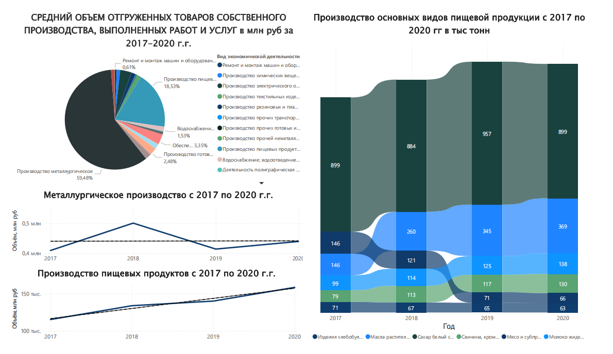
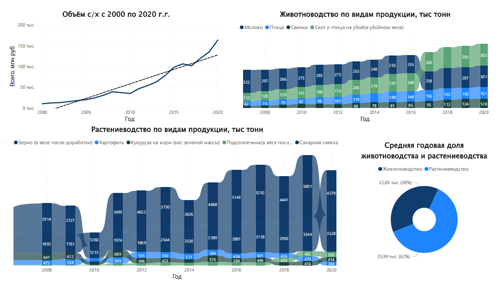
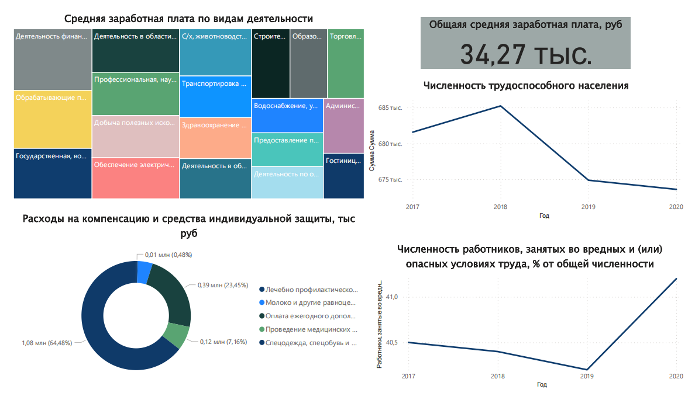
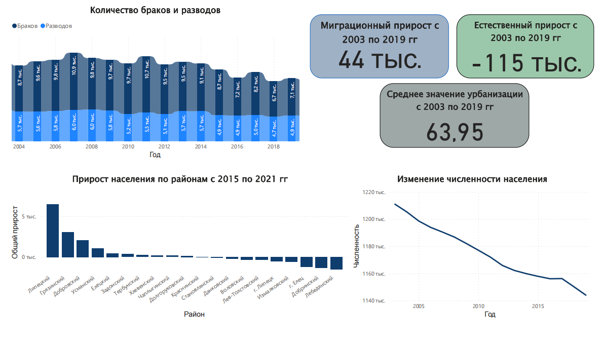
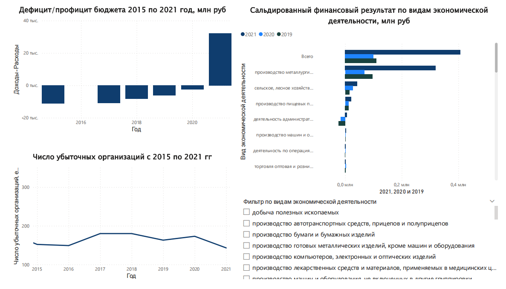
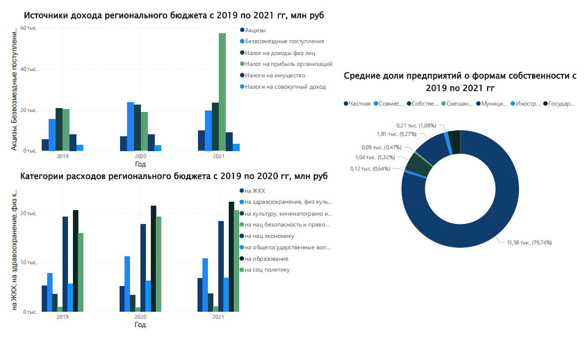
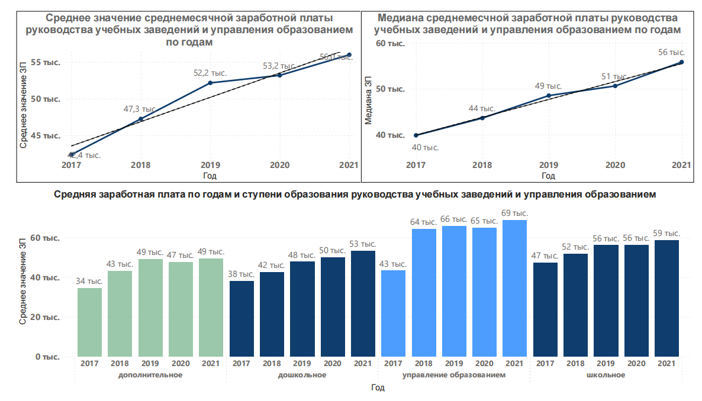

-
Источник
Тема проекта была объявлена пеподавателем по дисциплине "Интеллектуальные системы" на 4 курсе бакалавриата (вторая половина 2022 года). Требования были выдвинуты следующие:
- статистика любого региона России, кроме Москвы и Московской области;
- категории для анализа:
• динамика производства;
• состояние рынка труда;
• демографическая ситуация в регионе;
• финансовое положение региона;
• региональная экономическая политика.Липецкая область была выбрана в качестве анализируемого региона ввиду того, что член команды знаком с ним, так как является его жителем, а регионы проживания остальных участников не удовлетворяли требованиям. -
Цель и задачи
Работа осуществлялась с целью исследования требуемых сфер региона России.Задачи были следующими:
— сделать дашборд по каждой категории для анализа;
— сформулировать выводы, которые позволяет сделать каждый из дашбордов.
-
Инструменты
Microsoft Power BI
-
Скачать файл с проектом (ссылка)
-
Описание
Для анализа динамики производства, как и для других категорий, использовались данные территориального органа Федеральной службы государственной статистики по Липецкой области (https://lipstat.gks.ru/). Конкретно в данной категории имеется следующая статистика:
— Продукция сельского хозяйства в хозяйствах всех категорий (ссылка);
— Валовый сбор продуктов растениеводства (ссылка);
— Производство основных продуктов животноводства в хозяйствах всех категорий (ссылка);
— Объём отгруженных товаров собственного производства, выполненных работ и услуг собственными силами (ссылка).На листе «Динамика производства» (ниже) видно, что металлургическое производство — основная деятельность региона, которая имеет ровный тренд объёма в рублях. При этом стабильный из года в год рост (с 2017 по 2020 г.г.) показывает производство пищевых продуктов. С 2017 по 2020 год в производстве пищевых продуктов явным лидером является сахар белый свекловичный, также заметный рост виден в производстве растительных масел и их фракций, при этом производство мяса и субпродуктов домашней птицы сильно сократилось.Так как в металлургическом производстве основным производителем большинства видов изделий является НЛМК, данные о большинстве видов продукции не разглашаются. Поэтому детально было рассмотрено сельское хозяйство (дашборд представлен ниже), так как до того как стать регионом металлургов, он был аграрным регионом. На листе «Сельское хозяйство» на графике «Объём с/х с 2000 по 2020 г.г.» замечен большой рост. В общем за 20 лет объёмы с/х выросли более, чем в 16 раз. Причём с 2017 года наблюдается более резкий рост. Т. е. сельское хозяйство является весьма перспективным направлением в регионе. Если рассматривать процентное отношение животноводства и растениеводства, то объёмы растениеводства превосходят. Основными видами растениеводства являются сахарна свёкла и зерно. Основными продуктами животноводства является молоко и скот и птица на убой.Данные рынка труда состоят из следующей статистики:
— Среднемесячная номинальная заработная плата работников по полному кругу организаций по видам экономической деятельности (ссылка);
— Состояние условий труда работников (ссылка).Дашборд «Рынок труда» (изображение ниже) показывает, что средняя зарплата в регионе составляет около 35 тысяч рублей. Наиболее высокооплачиваемыми являются вакансии, относящиеся к:
• Деятельности финансовой и страховой (почти 50 тыс руб)
• Обрабатывающим производствам (46,5 тыс руб)
• Государственной, военной, социальной деятельности (40 тыс руб)
Наиболее низкооплачиваемыми являются вакансии относящиеся к:
• Гостиницам и предприятиям общественного питания (18,9 тыс руб)
• Административной деятельности (22,8 тыс руб)
• Деятельности по операциям с недвижимостью (23,6 тыс руб)
С 2018 численность трудоспособного населения падает, при росте с 2019 года доли работников, занятых во вредных или опасных условиях труда. ВВ основном компенсационные средства тратятся на спецодежду спецобувь и другие средства индивидуальной защиты, а также на оплату ежегодного дополнительного отпуска.Для описания демографической ситуации в регионе рассматривались показатели:
— Рождаемость, смертность и естественная убыль населения (ссылка);
— Браки и разводы (ссылка);
— Миграционный прирост населения (ссылка).На листе «Демография» (ниже) видно, что миграционный прирост с 2003 по 2019 год составляет 44 тысячи человек, тогда как естественная убыль — 115 тысяч. То есть численность населения падает и миграционный прирост не может компенсировать естественную убыль. Также заметно, что с 2004 по 2019 год число браков стабильно превышает число разводов, что является хорошей базой для развития семьи и семейных ценностей. Общий прирост населения с 2015 по 2021 год по райнам показывает, что люди переезжают из города в пригородные деревни, то есть не очень далеко от города.Финансовое положение региона располагает следующими данными:
— Основные финансовые показатели и сальдированный финансовый результат по видам экономической деятельности (ссылка);
— Данные по объёму бюджета взяты из справочников «Липецкая область в цифрах» с 2019 по 2021 г.г. и перенесены вручную.Дашборд «Финансовое положение» (расположен ниже) демонстрирует, насколько сильно зависит регион от металлургического производства. С 2015 года бюджет региона всегда в дефиците и в 2021 году впервые наблюдается профицит, что связано с невероятным ростом сальдированного финансового результат металлургического производства. Также на графике сальдированного финансово результата по отраслям с 2019 по 2021 год видно, что кроме металлургического производства выделяется сельское хозяйство и производство пищевых продуктов, которые несмотря на стремительный рост не могут тягаться с металлургами. Число убыточных организаций в Липецкой области довольно стабильно.Описание региональной экономической политики ассматривает статистику:
— Число предприятий и организаций по формам собственности (ссылка);
— Данные по доходам и расходам бюджета взяты из справочников «Липецкая область в цифрах» с 2019 по 2021 г.г. и перенесены вручную.На ниже представленном листе «Региональная экономическая политика» отражено, что большая часть предприятий в регионе находится у частников, налоги которых составляют основную часть бюджета, так как частники платят не только налоги на прибыль организаций, но и налоги на имущество, на совокупный доход, налоги на доходы физических лиц, которые платит работодатель. Основными категориями расходов являются образование, социальная политика, национальная экономика. Меньше всего средств тратится на национальную безопасность и правоохранительную деятельность и культуру.Дополнительно были проанализрованы данные департамента образования города липецка о среднемесячной заработной плате директоров и заместителей муниципальных образовательных учреждений. Источником данных для анализа являются ежегодные отчёты, опубликованные на сайте администрации города Липецка в разделе "Отчётная информация" (ссылка).На изображении ниже видно, что работники управления образованием получают больше остальных, однако в 2017 году разрыв был не таким большим, а работники школьной ступени получали больше работников управления. В 2018году произошёл резкий скачок заработной платы работников управления образования, которого не случилось на других этапах. Если рассматривать сферы, занятые в учебно-воспитательной деятельности, то можно заметить, что в школах работники в среднем получают больше, чем в остальных учреждениях, меньше всего получают работники дополнительного образования (в основном это дома творчества). Также в 2020 году незначительное снижение заработной платы с дальнейшим восстановлением или ростом наблюдалось у работников дополнительного образования и управления образования. В 2021 года медиана заработной платы сравнялась со средним показателем. До 2021 медиана была несколько ниже среднего показателя.